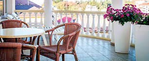
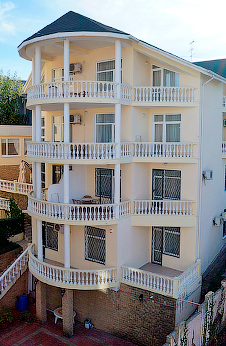

Мини-отель «Вилла Бавария» построен в 2006 году. Последний косметический ремонт был в 2011 году.
Отель расположен в центральном районе города Сочи (вблизи санаториев «Заполярье» и «Радуга»), в живописном месте в пяти минутах ходьбы от комфортабельного морского пляжа санатория «Заполярье».
Мы готовы предложить номера, удовлетворяющие вкусам и бюджету любого отдыхающего. От роскошных номеров класса «Люкс», до стандартных комфортабельных номеров среднего ценового уровня!

Номерной фонд отеля — 19 номеров. Стандартные одно- и двухместные однокомнатные номера, полу люксы, а также двухкомнатные люксы. Все номера оборудованы современной итальянской мебелью, телевизорами, DVD-проигрывателями, сплит-системами, холодильниками. Во всех номерах функционирует Wi-Fi. Кроме того, в номерах установлено профессиональное сантехническое оборудование, душевые кабинки с гидромассажем. Большинство номеров имеют просторные балконы и террасы.
На территории отеля имеется уютное кафе, где можно не только вкусно поесть, но и заказать романтический ужин при свечах, который также можно устроить прямо в вашем номере. Также у отеля имеется бесплатная автостоянка и внутренний двор с красивым озеленением.
Атмосфера домашнего уюта и прекрасное обслуживание сделают Ваш отдых незабываемым!